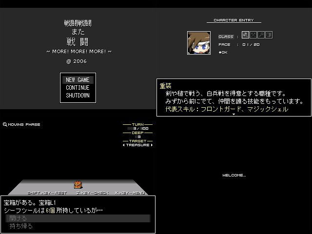

| No,058 【戦闘戦闘また戦闘 -もっと、もっとだ！編-】 |
| ダウンロード（0.99MB） 修正ファイル（98.7KB） 2007/1/12 23:30 |
 |
| 【ＨＮ】 いすのひと 【コメント】 よいか、じぇらーる。
我々はデフォルトセントウというシステムでたたかう。 ４つの職種を好みでチョイスし、魔王とか適当なのを倒してくるのだ。 それ以上のことができると思うな！ さあ、おれをたのしませてくれッ！ おれをかんじさせてくれッ！！ また、なんか変なのが見えても、ああ、マトリックスっぽいな、程度に思ってください。
実際はいたって正常です。ううん、知らないけど。 クリスマスプレゼントはちゃんと映るディスプレイをください。本気と書いてもとけと読むぐらい。 今月初頭から作りはじめました。うふ！
|
| 【管理人コメント】 俺が以前使ってたディスプレイはしばらくするとシェイクがかかる優れものだったんだぜ！ デフォ戦でどこまで楽しませてくれるか期待 |